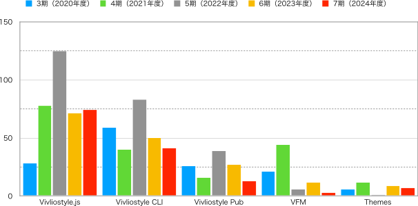

まず、今期における主要プロダクトのPR数（ただしアプリケーションによるものを除く）を示す。比較のために3期〜6期も併記している。

開発以外のトピックスとしては、まずgihyo.jpでの連載、Vivliostyleが拓くCSS組版の可能性が挙げられる。この連載では、Vivliostyleの技術的な特徴や活用事例、CSS組版の可能性について、実践的な例を交えながら解説している。以下に執筆時点での記事一覧を示す。なお、連載の趣旨と経緯については前期の活動報告書を参照されたい。
もう一つの今期のトピックは、Vivliostyle Pubの再起動である。本プロダクトは2022年4月にアルファ版を公開したがその後、開発が停滞していた。Vivliostyle Pubは、インストール不要で簡単にCSS組版を楽しめるWebアプリを目指していたが、このアルファ版の段階では簡単に使えるという目標には程遠いものであり、目標を実現するために開発リソースを確保する余裕がこれまでなかった。
この開発再開を決めるきっかけとなったのは、自費出版のWebサービスBooko（代表・長谷川恵子氏）との出会いである。Bookoは、Web上で簡単に本が作れるユーザーインターフェイスが優れている反面、見開きを超える長文の組版に技術的課題を抱えており、それを解決するためにVivliostyleの技術を必要としていた。そこで、私たちはBookoと協力して、Vivliostyle Pub開発を再起動することにした。また、オープンソースのVivliostyle Pub開発を促進し、それを活用した新しいBookoのサービス（VivlioBooko）の開発・運営を行う目的で、2025年2月にビブリオブッコ合同会社が設立された。これにはBookoの長谷川恵子代表と当法人の村上代表理事と小形理事が参加している。
新たな協力者を得たことでVivliostyle Pubのみならず、Vivliostyleプロジェクト全体の開発が促進されることが期待される。オープンソースで世界の誰もが自由に利用できるものを目指すプロジェクトの理念は変わらない。引き続きVivliostyleの開発やその活用に関心を持ってくれる協力者を増やしていきたい。